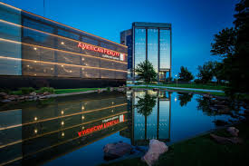

Professional Experience
Midland Mortgage, A Division of MidFirst Bank
Summer Intern - Mortgage Acquisition Department (June 2024 – August 2024)
- Developed a Python, MS Access, and VBA framework to evaluate loan pools for live bidding.
- Analyzed mortgage-backed securities (MBS) using Bloomberg & YieldBook.
- Led automation, reporting, and forecasting tasks for a portfolio of 240,000 loans.

American Fidelity Assurance Company
Special Services Intern - Technical Team (June 2023 – May 2024)
- Ensured data integrity and validation using Python and SQL.
- Collaborated with teams to identify & resolve data discrepancies.
- Led Salesforce and Mocha automation to optimize workflows.
Deloitte Consulting, Dallas, TX
Apprenticeship Program (February 2024 – April 2024)
- Gained exposure to SAPs, business consulting, and networking.
- Practiced case interview techniques with Deloitte professionals.
- Engaged in workshops on business chemistry & problem-solving.
Traditions Squares, Norman, OK
Community Assistant (Spring 2022 - Present)
- Managed a 300-resident student community, improving engagement.
- Organized community events and assisted in housing services.